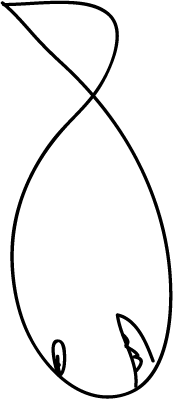

Ich bin Dimitri Steinel. Ich studiere Interaction-Design an der Berliner Technischen Kunsthochschule im 5. Semester. Meine Projekte zeichnen sich oftmals dadurch aus, dass sie ein sehr genau durchdachtes und auf den Nutzer zugeschnittenes Konzept besitzen. Durch meine Freelancetätigkeiten habe ich das professionelle Arbeiten, vorallem mit Fireworks und Photoshop, erlernt. Allgemein habe ich sehr gute Programmkenntnisse in der Adobe Creative Suite (Fireworks, Illustrator, InDesign, Photoshop, AfterEffects, Premiere Pro). Durch meine 1 jährige Fotoassistenz bei Ralph Geiling habe ich sehr gute Kenntnisse im Umgang mit digitaler Fotografie, Bearbeitung und Lichttechnik. Außerdem behersche ich folgende Programmiersprachen: VVVV, Html, CSS, Javascript/jQuery, Processing, Arduino, Isadora und PHP.